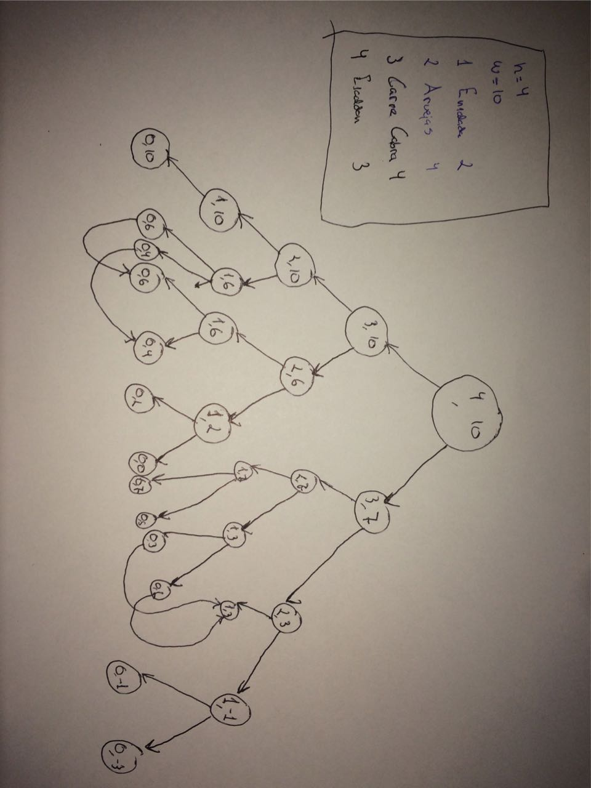

Explicación
Introducción
Para la construcción del algoritmo recurso se ha utilizado el material proporcionado por el profesor acerca del problema de la mochila (Knapsack 0-1) y un video en el que se explica detalladamente la resolución de dicho problema.
Inicialmente, el problema de los menus saludables se puede formular de manera parecida al problema de la mochila:
- Contamos con una serie de elementos que no pueden ser repetidos en nuestra lista de elementos
- Cada elemento tiene un peso (puntuación en nuestro caso) y un valor (valor nutricional en nuestro caso)
- Debemos conseguir el máximo valor sin superar el peso máximo (debemos conseguir el mayor valor nutricional sin superar la máxima puntuación establecida, en nuestro caso).
En caso de hacerlo mediante fuerza bruta, dado que hay n elementos, puede haber $${2^n}$$ posibles combinaciones, por lo que el algoritmo correrá asintóticamente en $${O(2^n)}$$, al igual que nuestro algoritmo recursivo.
Lo que primero se nos ocurre para desempeñar el algoritmo mediante programación dinámica, es identificar la ecuación recursive que asocie el problema con los subproblems:
- Si los elementos están etiquetados de 1..n, entonces el subproblems será encontrar la solución óptima para Sk = {elementos etiquetados 1,2, .. k}.
Puntuación máxima: W=20
| Elemento | Puntuacion | Valor nutricional |
|---|---|---|
| 1 | 2 | 3 |
| 2 | 4 | 5 |
| 3 | 5 | 8 |
| 4 | 3 | 4 |
| 5 | 9 | 10 |
S4{e1, e2, e3, e4}, Puntuación total: 14, Valor nutricional: 20.
S5{e1, e2, e3, e5}, Puntuación total: 20, Valor nutricional: 26.
Después de probar a mano con los elementos mostrados en la tabla, vemos que la solución S4 no es parte de la solución S5, por lo que viola el principio de la optimalidad. La solución optima del problema debe incluir la solución optima de sus subproblems.
Algoritmos
Ahora supongamos una matriz V[i, j], donde i = 1, ... , n y j = 0, ..., W. La entrada Via contendrá el valor nutricional máximo (combinado) cuando sólo se consideran los objetos {1, ...,i} y su puntuación (combinada) no exceda el valor de j, lo que vendría a ser nuestro subproblema. Si se calculan las entradas de dicha matriz, la entrada V[n, W] contendrá el valor nutricional máximo que se puede obtener considerando los n objetos y la puntuación máxima W del menú saludable.
V[i, j] = Integer.max(V[i-1,j], V[i-1,j-wi] + vi) para i=1,...,n y j=0,...,W.
Tal que:
- El primer termino V[i-1, j] se corresponde con no incluir el plato i en el menú saludable.
- El Segundo término (V[i-1, j-wi] + vi) se corresponde con incluir el plato i en el menú saludable.
- En caso de incluirlo, se debe incrementar el beneficio obtenido en vi y disminuir la capacidad disponible en wi.
Esto se aplica a la construcción de los algoritmos necesarios para la resolución del problema:
public int recursiva(Menu conjunto, int wi, int W, int n){
if (n == 0 && W >= 0){
return 0;
}
if (W < 0){
return Integer.MIN_VALUE;
}
int maxA = recursiva(conjunto, conjunto.getPlato(n).getPunctuation_(), W, n - 1); //Primer termino
int maxB = recursiva(conjunto, conjunto.getPlato(n).getPunctuation_(), W - conjunto.getPlato(n).getPunctuation_(), n - 1) + conjunto.getPlato(n).getNutritionalValue(); //Segundo termino
return Integer.max(maxA, maxB);
}
public void algoritmo_bottomup(int [][] matriz, int [] v, int []w, int n, int W){
for (int j = 0; j < W; j++){
matriz[0][j] = 0;
}
for(int i = 1; i <= n; i++){
for(int j = 0; j < W; j++){
if(w[i-1] <= j){
matriz[i][j] = Integer.max(matriz[i-1][j], matriz[i-1][j - w[i-1]] + v[i-1]);
}
else{
matriz[i][j] = matriz[i-1][j];
}
}
}
}
int algoritmo_topdown(int [][] matriz, int [] v, int [] w, n, W){
if (n == 0) && (W >= 0)
return 0;
if(W < 0)
return Integer.Min_VALUE;
if( matriz[n][W] != -1)
return matriz[n][W];
v1 = algoritmo_topdown(matriz, v, w, n -1, W);
v2 = algoritmo_topdown(matriz, v, w, n -1, W - w[n]) + v[n];
matriz[n, W] = Integer.max(v1, v2)
}
Como hemos comentado antes, si se lleva a cabo un análisis en función de todos los posibles sub-conjuntos que se pueden crear a partir de un conjunto con n elementos, resulta que existe un total de 2 a la n posibles sub-conjuntos. Este algoritmo recursivo lleva a cabo la comprobación de cada una de esas posibilidades, por lo que su tiempo de ejecución pertenece a $${O(n^2)}$$
En el caso del algoritmo Bottom-Up, si damos por hecho que tenemos la matriz V[0..n][0..W], puesto que la ejecución del algoritmo está dentro de un bucle de i = 1 hasta n, y de otro bucle desde w = 0 hasta W, T(n,W) -> O(nW).
En el caso del algoritmo Top-Down, al guardarse las posiciones ya calculadas en la tabla, solo se realiza calculo una vez por cada elemento de la matriz, por lo que el tiempo de ejecución es idéntico al Bottom-Up.
Solución
En cuanto a la solución, aplicado para los siguientes casos:
- Para el mismo ejemplo del campus: Nos muestra que los platos "Rapadura" y "Carne Cabra" están en el menú, sumando un valor nutritivo de 400.
- Si eliminamos Carne Cabra de la lista de platos, Escaldon, Arvejas y Ensalada serían nuestra solución, sumando un valor nutritivo de 350.
- Si bajaremos el W a 70, nuestra solución sería el Escaldon con 280 de valor nutritivo.
Grafo de subproblemas
